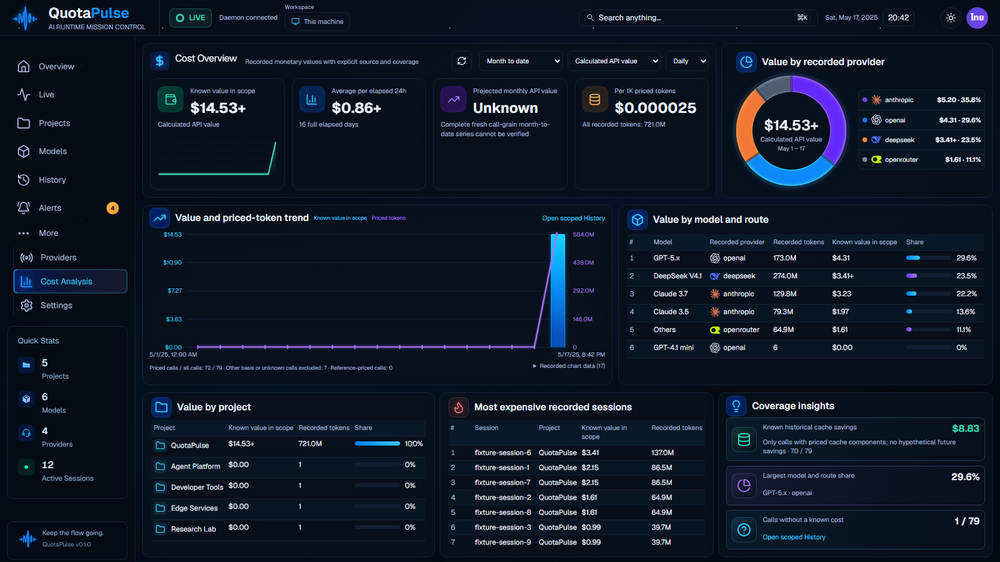
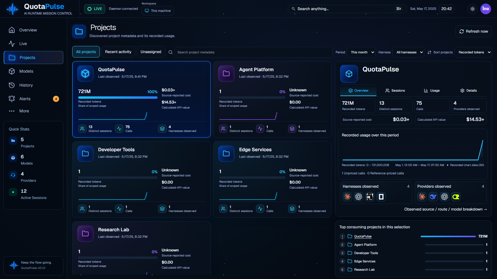

QuotaPulse v1.85.93: original / current
Actual application through isolated synthetic memory API fixtures; production uses real data. No fake Concept Preview mode.
Validation and limits | Remaining work.316web tests,27 native interaction stages and fresh8-page geometry pass. Three changed pages preserve resting PNGs exactly. Overall99-100% visual acceptance and release remain open; historical independent raster failures are retained.
alerts: original / current93
Original concept Current93 actual API fixture
Current93 actual API fixture
cost: original / current93
Original concept Current93 actual API fixture
Current93 actual API fixture
history: original / current93
Original concept Current93 after closing the automatically opened newest-record dialog (Escape). Actual initial entry
Current93 after closing the automatically opened newest-record dialog (Escape). Actual initial entry
live: original / current93
Original concept Current93 actual API fixture
Current93 actual API fixture
models: original / current93
Original concept Current93 actual API fixture
Current93 actual API fixture
overview: original / current93
Original concept Current93 actual API fixture
Current93 actual API fixture
projects: original / current93
Original concept Current93 actual API fixture
Current93 actual API fixture
providers: original / current93
Original concept Current93 actual API fixture
Current93 actual API fixture